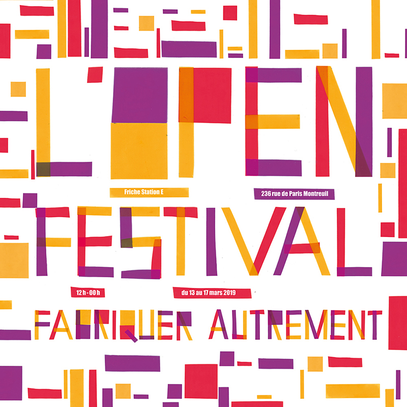

Open festival
L’open festival est un festival de nouvelles technologies et de DIY à la station E. Il s’appuie notamment sur comment concevoir soi-même et apprendre à réparer.
⁂ Pour ce besoin d'affichage et d'identité, les affiches sont diffusées en 3 spatialités, 3 cercles entourant la station E. L'idée du projet est de ramener petit à petit les gens vers le lieu. Paris n'aura alors que peu d'informations sur l'événement tandis que Montreuil aura l'affiche complète directement.
⁂ Par la suite l'intérieur du festival aura divers flyers et programmes qui seront, eux, un détail de la lettre afin de rentrer dans les détails de la conception de l'affiche, au même titre que l’on rentre dans ce festival pour se former.
▷ Identité visuelle
▷ mai 2018
open festival